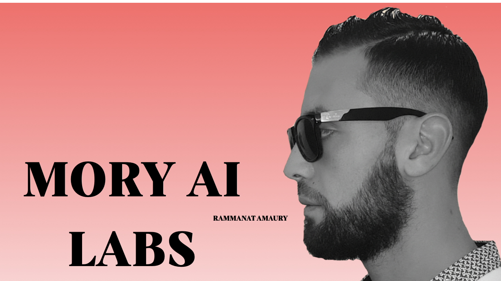

AI Engineering
Solutions Data & IA.

DATA ENGINEERING • MACHINE
LEARNING • AGENTS IA • AUTOMATISATION •
DATA ENGINEERING • MACHINE
LEARNING • AGENTS IA • AUTOMATISATION •
Projets
Récents
Portfolio
2026 — 2027

Voir l'Étude de Cas
Nexus Auto-Agent
Automatisation Fintech

Data Lake V2
Infrastructure Entreprise
NOTRE PROCESSUS
01
Découverte
Nous analysons votre infrastructure et vos objectifs pour identifier les opportunités IA à fort impact.
02
Architecture
Conception détaillée des pipelines de données et des workflows d'agents avant le développement.
03
Déploiement
Développement itératif et tests rigoureux pour une intégration fluide en production.